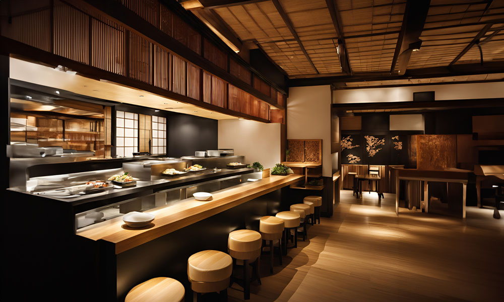
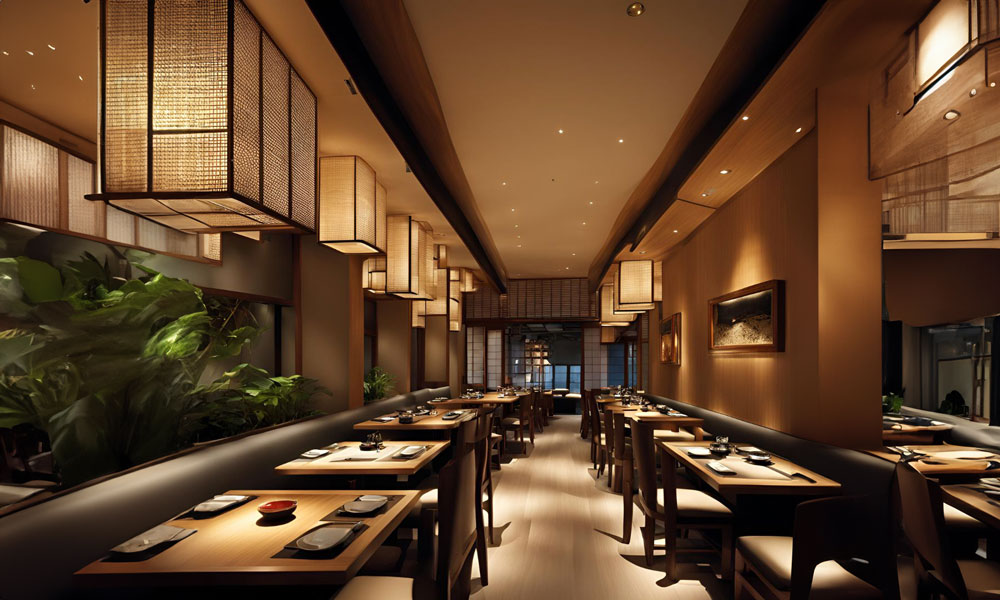
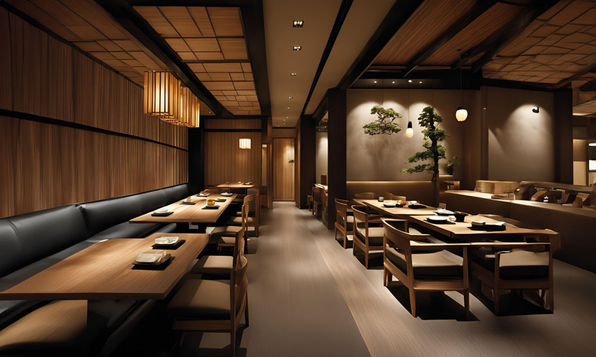
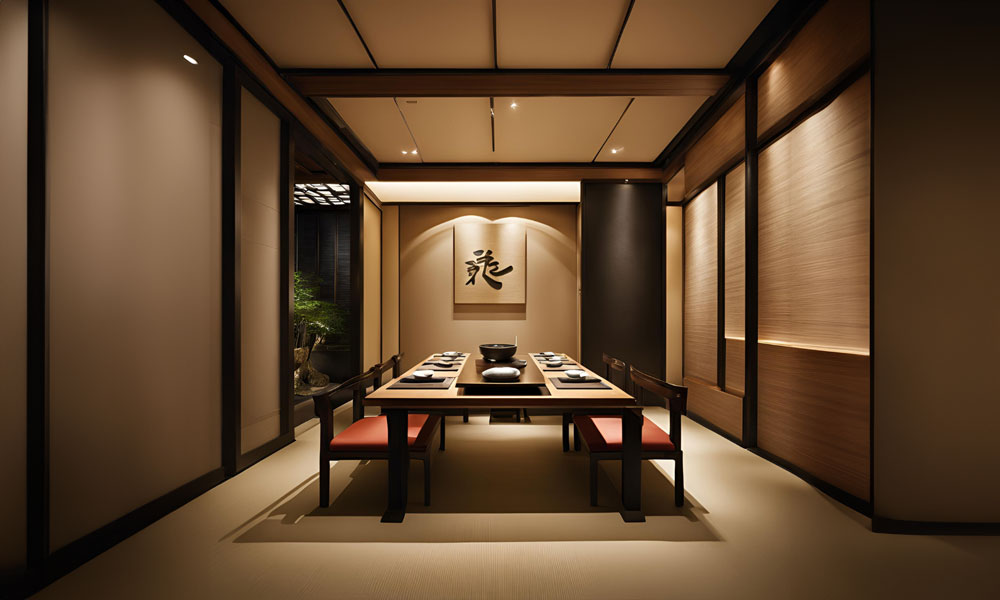

店舗のご案内
店舗情報
| 店名 | 和食の彩(いろどり) |
| 住所 | xx県 xx市 xxxxxx-x-xx 1F |
| アクセス | 「xx駅」より徒歩11分 |
| 営業時間 | 昼の部：11:30~14:30(ラストオーダー14:00) 夜の部:17:30~22:00(ラストオーダー21:00) |
| 定休日 | 毎週火曜日 |
| 総席数 | 80席(個室10席、カウンター８席、テーブル席62席） |
| 駐車場 | なし(近隣の有料駐車場をご利用ください) |
| 備考 | 店内は禁煙とさせていただいております。 |
店内
｢和食の彩｣は、
伝統を大切にしながらも
現代の感性を取り入れた
和モダンな空間へと
生まれ変わりました。
創業以来、多くのお客様に愛され続けてきた老舗としての風格を保ちつつ、20xx年に全面改装を行い、新たな魅力を加えました。
カウンター席
カウンター席
職人の技を間近で楽しめる特等席です。お料理ができる様子や、鮮やかな盛り付けを目の前でご覧いただけます。おひとり様でも気軽にお越しいただける雰囲気です。
テーブル席


テーブル席
和の風情を感じさせる落ち着いた空間で、ゆったりとお食事を楽しんでいただける席です。ご家族連れやご友人同士で、季節の彩り豊かな料理を囲んだ楽しいひとときをお過ごしください。
個室
個室
プライベートな空間で特別な時間を過ごしたいお客様におすすめです。接待や記念日、家族の特別な集まりなど、周囲を気にせずゆっくりとお食事を楽しんでいただけます。少人数から大人数まで対応できる個室をご用意しております。
料理長ごあいさつ
皆さま、ようこそ「和食の彩」へ。
私は料理長の山田 昂と申します。
当店では、日本の四季折々の美しさを一皿一皿に表現することを心がけております。お客様にとって、ここでの食事が特別なひとときとなりますよう、真心を込めておもてなしさせていただきます。和食の伝統と現代の感性を融合させた料理をお楽しみいただければ幸いです。
皆様のご来店を、心よりお待ちしております。